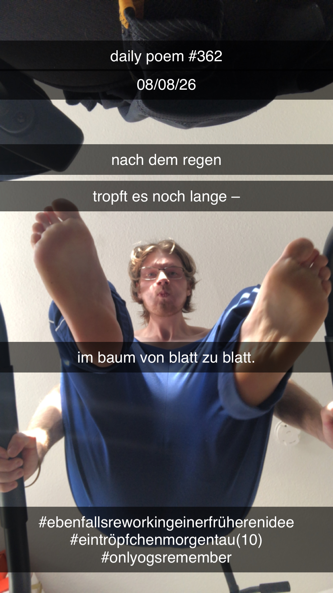

Nach dem Regen Haiku
[362]Nach dem Regen
Tropft es noch lange –
Im Baum von Blatt zu Blatt.

Nach dem Regen
Tropft es noch lange –
Im Baum von Blatt zu Blatt.

Basiert auf einem früheren Draft von: Ein Tröpfchen Morgentau Haiku
Anmerkungen
basiert auf einem früheren draft vom ein tröpfchen morgentau haiku (10), aber hebt sich glaub ich noch gerade genug davon ab, dass es für sich stehen kann
after all, morgentau und regen sind zwei völlig verschiedene dinge...